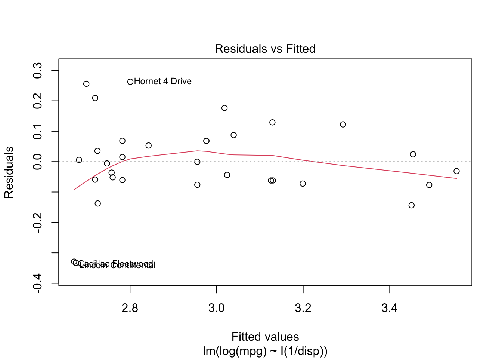

Chapter 1 Building Blocks
This chapter contains concepts, definitions, and mathematical techniques that will be used throughout the semester. Critical terms to understand are given in bold.
1.1 Planning for Human Systems
If you look out on any sufficiently busy road, you will see a steady stream of vehicles passing by. Each vehicle is largely indistinguishable from the others, and it is easy as an engineer responsible for that road to see the cars driving by as little more than an input to a problem. But the people inside the cars should not be indistinguishable from each other. Each person who is driving or riding in each of those cars has their own reasons to be driving on that road. One person might be driving to work; one person might be trying to get home to his or her family. Another car might hold a family going on vacation, or a group of friends heading to a movie.
If you don’t recognize that each person who travels is different, with different needs and purposes, then it is easy to look only at the supply of transportation infrastructure. Is the road wide enough? Is the traffic signal timed appropriately? But as with anything in the economy transportation is a function of both supply and demand. Why are so many people trying to get down this one road right now? Why didn’t more people take transit? Why didn’t some people choose a different destination? Or why didn’t some people just stay home in the first place?
Transportation planning therefore must be concerned with both the supply of infrastructure and the demand for travel. For the most part, economists consider travel a derived demand, which means people only go to the hassle of traveling somewhere if they have some other reason to be there. No one typically just drives around (with the possible exception of teenagers on a weekend night); they are going to work, or school, or a social engagement, or something.
Travel demand has not been stable over time. The availability of inexpensive automobiles in the 20th Century created demand for inter-city and intra-urban roads that did not exist before. Rising labor force participation rates for women radically changed the number and types of trips the average household makes in an average day. Technological developments like teleconferencing and smartphone-enabled ridehailing could generate different trends. At the same time, populations in most regions continue to grow. Planning for future transportation infrastructure is difficult because of the uncertainty of the future, but it is necessary to keep economies rolling and preserve or improve quality of life.
In the United States and most societies with some democratic process, decisions about what transportation facilities to build, which policies to implement, and how to build a city generally fall to decision makers. These decision makers consist of mayors, city councils, planning commissions, state legislatures, Congress, state and federal agencies, and innumerable others who are elected by the public, or who are accountable to others who have been. In making decisions about how to spend public money on civil infrastructure or enact tax or other policies, decision makers consult plans developed by professional engineers and planners.
As engineers and planners, we are rarely in a position to make decisions, but we have a responsibility to provide accurate data and technical analysis to support decision makers. There is a misconception that transportation planners must accurately predict the future to be relevant. The purpose of transportation planning is not to perfectly envision what will happen under every scenario, it is to provide information that will help make good decisions now so that the future is at least as pleasant as the present. We all have hopes for what our lives and community will look like ten or twenty years from now; it may not be possible for anyone to provide analysis entirely free of all personal bias. But as you conduct your work as an engineer and planner, you owe the public your integrity and competence as you provide information to their representatives.
1.2 The Four-Step Transportation Planning Process
How can you know what might happen in the future? And how might that change based on decisions that you make today? This basic question is at the heart of transportation planning:
- What might traffic look like if we build nothing and population still grows?
- Can we build less if we change land development patterns?
- How many people will use this new transit line?
In many fields — including politics, meteorology, economics, etc. — professionals who seek answers to questions like this do so with the help of a model. A model is a mathematical representation of a real-world system. In any model, there are things that need to vary (called inputs), things that can be estimated or calibrated (called parameters), and results (called outputs). There are also things that are held fixed. The specific mathematical structure of the model, and which things get included and which things are excluded or abstracted away, determine what the model should and should not be used for.
For example, we might try to predict something with a linear model, \[\begin{equation} y = \alpha + \beta x + \varepsilon \tag{1.1} \end{equation}\] In this case \(y\) is the output, \(x\) is the input, the \(\beta\) parameter defines how the input influences the outcomes, \(\alpha\) is a fixed value, and \(\varepsilon\) accounts for the random influence of all the factors we did not include. We could add more \(\beta\) and \(x\) terms to include more factors in the model. We could also change the mathematical format of the model to represent different types of outcomes, or chain several smaller models together to represent more complex relationships. If we wanted to see what might happen if \(x\) changed, we could put in a new value into this equation and the output result \(y\) might be a plausible prediction. The plausibility of the output is a function of how well the mathematical model actually represents the reality of the system.
In this class you will learn the details of the travel demand modeling process, which is a chain of many models, each with different inputs and outputs. A travel demand model on the whole has two basic inputs:
- Socioeconomic data representing where people live and work and go to school and do other things.
- Transportation network data representing the roads and transit services and other methods people use to get between their activities.
The basic outputs of a travel demand model are transportation volumes and levels of service. There are many ways to design and build travel demand models, but the traditional way most regions in the United States approach travel demand models is through a four step, trip-based1 process. The four steps are:
- Trip Generation
- Trip Distribution
- Mode Choice
- Route Assignment
A trip generation model determines how many trips are produced in each zone (neighborhood), and how many trips are attracted to each zone. The inputs to this model is the socioeconomic data in each zone. Mathematically, trip generation can be represented as \[\begin{equation} P_i = f(SE_i), A_j = f(SE_j) \tag{1.2} \end{equation}\] where \(i\) and \(j\) are the production and destination zone indexes.
A trip distribution model seeks to pair the productions and attractions in the zones based on the travel costs \(c\) between the two zones. Mathematically, trip distribution can be represented as \[\begin{equation} T_{ij} = f(P_i, A_j, c_{ij}) \tag{1.3} \end{equation}\]
A mode choice model estimates how many of the trips from \(i\) to \(j\) will happen on each available mode \(k\), based on the travel time by each mode and other attributes of the origin and destination zones. Mathematically, \[\begin{equation} T_{ijk} = f(T_{ij}, c_{ijk}, SE_{i,j}) \tag{1.4} \end{equation}\]
A route assignment model determines the specific routes that the trips going between \(i\) and \(j\) take. This allows us to estimate the volume of level of service on each highway link and transit system \(l\). Mathematically, \[\begin{equation} LOS_l, V_l = f(T_{ijk}, c_{ijk}) \tag{1.4} \end{equation}\]
On the whole, the travel demand model can be represented mathematically as a single function where the output transportation volumes and levels of service are a function of the input socioeconomic information and travel costs.
\[\begin{equation} LOS_l, V_l = \mathcal{F}(SE_{i,j}, c_{ij}) \tag{1.5} \end{equation}\]
The details of each of these models will be the topic for the next several chapters.
1.3 Travel Model Building Blocks
In this section, we present some of the terms used in transportation planning and modeling, as well as some of the data objects used in constructing travel demand models.
1.3.1 Travel Analysis Zones and SE Data
The “people” in a model conduct activities: work, school, recreation, and other activities. Because travel is a derived demand, the purpose of travel is to move between these activities. So a travel model needs a way to represent where the households, persons, jobs, and activities are located in space.
Activities in travel demand models happen in Travel Analysis Zones (TAZs). The model tries to represent trips between the TAZs. Because trips inside a TAZ — called intrazonal trips — are not included in the travel model, each TAZ should be sufficiently small such that these trips do not affect the models’ ability to forecast travel on roadways. The following rules are helpful when drawing TAZ’s:
- The TAZ should not stretch across major roadways
- The TAZ should contain principally one land use, though in some areas this is not possible.
- In areas with more dense population, the TAZ should be smaller.
Each TAZ is associated with socioeconomic (SE) data, or information about the people, businesses, and other activities that are located in the TAZ. Households are a basic unit of analysis in many economic and statistical analyses. A household typically consists of one or more persons who reside in the same dwelling. Individuals living in the same dwelling can make up a family or other group of individuals; that is, a group of roommates is considered a household. Not everyone lives in households, however; some people live in what are called group quarters: military barracks, college dormitories, monasteries, prisons, etc. Travel models need to handle these people as well, but in this class we will focus on people who live in households.
Households in travel models are often grouped into a classification scheme based on the number of people in the household, the number of children, the number of vehicles, etc. Households of different classifications will have different behavior in the rest of the model.
Your lab activity for this unit will walk you through specifying a household classification model.
Firms are another basic unit of analysis in many economic and statistical analyses. A firm is a profit-seeking person or entity that provides goods or services in exchange for monetary transactions. A firm can provide raw resources, manufactured resources, other services, or be a place of employment. In some cases, a firm may be another household. Each firm will have an industry type. Examples of industry types include office, service, manufacturing, retail, etc. In many SE data files, firms are simply represented as the total number of jobs in a TAZ belonging to each industry. Other Institutions including academic, government, and non-profit entities will also be represented in the SE data in terms of their jobs.
It is important to be precise in our definitions when put all of these different items into an analysis. A typical socioeconomic data table for a small region is given in Table 1.1. Note the following relationships:
- Persons live in Households
- Workers are Persons who have a Job
- Firms have employees who work at a Jobs

Figure 1.1: Travel Analysis Zones in Central Roanoke.
When we talk about “how many jobs” are in a TAZ, we mean “How many people do the firms located in that TAZ employ,” and not “how many people who live in that TAZ are workers.”
| taz | persons | hh | workers | retail | office | manufacturing |
|---|---|---|---|---|---|---|
| 1 | 44 | 25 | 22 | 129 | 96 | 2 |
| 2 | 45 | 47 | 21 | 121 | 81 | 11 |
| 3 | 32 | 35 | 17 | 148 | 89 | 0 |
Alice lives with her husband in zone \(A\) and works as an accountant in zone \(B\). Her husband does not currently work. Fill out the SE table from Table 1.1 with just this household’s information.
Two persons live in one household with one worker in zone A. The firm Alice works at has an office job for her in Zone B.
| taz | persons | hh | workers | retail | office | manufacturing |
|---|---|---|---|---|---|---|
| A | 2 | 1 | 1 | |||
| B | 1 |
1.3.2 Transportation Networks
The purpose of a travel model is to understand how people are likely to use transportation infrastructure, so there has to be a way to represent roadway and transit systems. We do this with a network2. A network consists of two basic data structures: Nodes and Links
Nodes are points in space. In a highway network, almost all nodes represent intersections between different roads. Some important nodes represent the TAZ Centroids, or the points where the households and jobs in the travel model are located.
Links connect nodes, and represent roads. Links have many different attributes describing the characteristics of the roadway they represent. The two most important link attributes are the link’s speed and capacity, because they provide the travel costs (\(c_{ij}\) above) to the various steps of the model. But these attributes might not always be known at the outset, so instead we use attributes of the roadway that influence capacity and speed, and then calculate these other values.
Functional Type or Functional Class describes the relative role each road plays in the transportation system (A Policy on Geometric Design of Highways and Streets, 7th Edition, 2018). Every street fills a role on a spectrum from mobility on one end to accessibility on the other: roads that are good at moving high volumes of vehicles are usually not good at providing access to homes and businesses. Common functional types include:
- Freeways are provided almost exclusively to enhance mobility for through traffic. Access to freeways is provided only at specific grade-separated interchanges, with no direct access to the freeway from adjacent land except by way of those interchanges.
- The primary function of major and minor arterials is to provide mobility of through traffic. However, arterials also connect to both collectors and local roads and streets and many arterials provide direct access to adjacent development.
- Major and minor collectors connect arterials to local roads and provide access to adjacent development. Mobility for through traffic is less important.
- Local streets exist primarily to serve adjacent development. Mobility for through traffic is not important, or even desired.
Figure 1.2 shows roads in Provo and Orem classified by this scheme. Streets of a functional class below collector are almost never included in travel models, unless they provide essential connectivity between other roads. Entire neighborhoods of local streets may be represented by just a handful of special links called centroid connectors.

Figure 1.2: UDOT Functional Classes.
Why are local roads not included in travel models?
Free-flow speed is the speed vehicles travel when the road is empty. Historically, travel modelers would use formulas in the Highway Capacity Manual to estimate the free-flow speed for roadways, or assert a basic calculation like 5 miles per hour over the speed limit. More recently, modelers use the speeds reported from GPS devices in the middle of the night to establish free-flow speeds.
The number of lanes on a road is fairly self-explanatory, but it plays a major role in the road’s capacity.
Roads located in different area types – urban, suburban, and rural – operate differently from each other. Sometimes travel models will assert this value, but more recent models will calculate the area type for each link based on the density of the surrounding TAZs.
Link capacity is the maximum number of vehicles a can optimally transport between two nodes. The capacity is a function of functional type, lanes, free-flow speed, area type, etc. Usually travel models will calculate the capacity based on the given values for other roadway characteristics, but sometimes there are ways to override this feature, i.e., if engineers have developed specific capacity estimates for a new project.
Centroid connectors are special links that connect centroids to a network. These are different from other links in that they usually don’t have a capacity or a speed (they don’t represent real roads).
1.3.3 Matrices
Travel models need to represent travel times, costs, and flows between zones. Models store this data in matrices, special data structures developed for this purpose. Each matrix is a square table where the rows \(i\) represent origin zones and the columns \(j\) represent the destination zones. Each cell represents something about the relationship between the two zones.
There are two kinds of information we typically represent with matrices:
Cost matrices, or skims, are matrices where the cells contain estimates of travel time or cost. They are called skims because they are the results of skimming a network to find the shortest path between each pair of TAZ centroids.
Flow matrices, represent flows of people or vehicles from each origin to each destination. The number in the corresponding cell \(T_{ij}\) is the total number of trips made, and represents the demand between two zones in a network.
1.4 Data Inputs
In the last section we discussed data structures like highway networks and socioeconomic data files. In this section, we are going to talk about the data inputs that can be used for developing travel models. Besides highway networks — which usually have to be supplied by the transportation agency — modelers frequently gather data from household travel surveys and the US Census Bureau.
Obtaining an accurate highway network is one of the most difficult tasks in travel modeling. It’s not conceptually or intellectually difficult, but it is very difficult to map model networks onto the linear referencing systems or GIS files used by other agency departments. This is made even more difficult by model networks needing to be routeable: common GIS formats like shapefiles have no way of representing routability.
1.4.1 Household Travel Surveys
Travel demand models try to represent individual behavior. How many trips does the average household make per day? How do people respond to changes in transit fare? And how can a modeler know if the model accurately reflects total traffic?
Household travel surveys are a critical component of much travel modeling practice and research, and are a primary way to answer some of these questions. In a travel survey, a regional planning agency3 will recruit households to participate in the survey. Often there is some kind of reward to encourage participation, like a gift card or raffle. Once recruited, household members fill out a diary of their activities on an assigned day; Figure 1.3 shows an example of one activity from a survey diary. From the example, you can see the kinds of data that are available: where the person traveled, which travel mode they used, and what was their reason for making the trip.

Figure 1.3: Example travel survey diary entry.
Not all travel surveys are filled in on forms; nowadays telephone interviews or mobile applications are more common (more on that below). But for decades, paper travel surveys were the basis of almost all transportation behavior science.
Once the surveys are collected, the data is usually processed into several tables stored in different files or a database.
- A Households table has one row for each household in the dataset, including information about the number of people in the household, the number of vehicles, and the household income.
- A Persons table has one row for each person in the dataset — including which household they are a part of (to link with the households table) — and personal attributes like age, student or worker status.
- A Vehicles table has one row for each vehicle owned by the households in in the dataset, including attributes like model year, vehicle class, and fuel efficiency.
- A Trips table has one row for each trip taken by each person in the dataset. This table can be linked against the other tables if necessary, and contains information like the trip purpose and many other elements collected with the form in Figure 1.3.
Tables 1.2 through 1.5 show data collected from one household in the 2017 National Household Travel Survey. The household contains four people, two of whom are working adults in their late thirties. (the other two are children, and the NHTS did not collect their trip data). The household has two vehicles, and on the survey travel day person 2 appeared to make a few very long trips. It’s impossible to know if this is a typical day for this person or not, but that’s the data that was collected.
| houseid | hhsize | numadlt | wrkcount | hhvehcnt | hhfaminc | wthhfin |
|---|---|---|---|---|---|---|
| 30000082 | 4 | 2 | 2 | 2 | $100,000 to $124,999 | 1148.809 |
| houseid | personid | r_age | educ | r_sex |
|---|---|---|---|---|
| 30000082 | 01 | 39 | Graduate degree or professional degree | Female |
| 30000082 | 02 | 38 | Bachelor’s degree | Male |
| houseid | vehid | vehyear | make | model | fueltype | od_read |
|---|---|---|---|---|---|---|
| 30000082 | 01 | 2011 | Mazda | Mazda3 | Gas | 83644 |
| 30000082 | 02 | 2007 | Toyota | Yaris | Gas | 120615 |
| houseid | personid | strttime | endtime | trpmiles | trptrans | trippurp |
|---|---|---|---|---|---|---|
| 30000082 | 01 | 2017-10-10 07:45:00 | 2017-10-10 07:52:00 | 2.710 | Car | Home-based trip (other) |
| 30000082 | 01 | 2017-10-10 08:09:00 | 2017-10-10 08:13:00 | 1.432 | Car | Not a home-based trip |
| 30000082 | 01 | 2017-10-10 08:24:00 | 2017-10-10 08:28:00 | 0.777 | Car | Not a home-based trip |
| 30000082 | 01 | 2017-10-10 16:53:00 | 2017-10-10 16:57:00 | 1.075 | Car | Not a home-based trip |
| 30000082 | 01 | 2017-10-10 17:18:00 | 2017-10-10 17:26:00 | 2.727 | Car | Home-based trip (other) |
| 30000082 | 02 | 2017-10-10 07:30:00 | 2017-10-10 07:33:00 | 2.136 | Car | Home-based trip (shopping) |
| 30000082 | 02 | 2017-10-10 07:38:00 | 2017-10-10 08:50:00 | 88.581 | Car | Not a home-based trip |
| 30000082 | 02 | 2017-10-10 08:58:00 | 2017-10-10 09:49:00 | 45.341 | Car | Not a home-based trip |
| 30000082 | 02 | 2017-10-10 10:51:00 | 2017-10-10 12:24:00 | 28.208 | Car | Not a home-based trip |
| 30000082 | 02 | 2017-10-10 17:00:00 | 2017-10-10 17:05:00 | 0.239 | Walk | Not a home-based trip |
| 30000082 | 02 | 2017-10-10 19:15:00 | 2017-10-10 19:26:00 | 0.267 | Walk | Not a home-based trip |
| 30000082 | 02 | 2017-10-10 19:30:00 | 2017-10-10 20:43:00 | 29.293 | Car | Not a home-based trip |
Note that that the households data in Table 1.2 contains a
numeric column called wthhfin. This is a survey weight. Because it is impossible
to sample everyone in a population, there needs to be a way to expand the survey
to the population. What this number means is that the selected household carries
the same weight in this survey as approximately 1100 households in the general
population. Also note that not every household’s weight will be equal; because
some population groups have different survey response weights, some households
will need to be weighted more heavily so that the survey reflects the general
population. Most software packages have functions that allow you to
calculate statistics or estimate models including weighted values. The code
chunk below shows how to calculate the average number of workers per household
with and without weights in R; as you can see, omitting the weights leads
to a substantial change in the survey analysis.
## [1] 0.9891438# Average workers per household, weighted
weighted.mean(nhts_households$wrkcount, nhts_households$wthhfin)## [1] 1.173206Travel survey methodology is changing rapidly as a result of mobile devices with location capabilities. First, most travel surveys are now administered through a mobile application: respondents are invited to install an app on their smartphone that tracks the respondent’s position and occasionally asks questions about trip purpose or mode. This makes collecting and cleaning data considerably easier than traditional paper surveys, and it also lowers the response burden for the survey participants. Another change that mobile data has brought to travel surveys is the introduction of large datasets of location information that planners can purchase directly from cellular providers or third-party providers. Though these data do not have all the information on demographics and preferences a survey would provide, they provide a considerably larger and more detailed sample on things like overall trip flows. As a result, it may be possible to collect surveys less frequently, or to reduce survey sample sizes.
1.4.2 US Census Bureau
The primary statistical agency of the United States is the U.S. Census Bureau, called Census. The need to collect statistics is established in the Constitution,
Representatives and direct Taxes shall be apportioned among the several States which may be included within this Union, according to their respective Numbers… The actual Enumeration shall be made within three Years after the first Meeting of the Congress of the United States, and within every subsequent Term of ten Years, in such Manner as they shall by Law direct.
Since the first census in 1790, Census has collected more data than simply the number of people in each state. Current programs that are especially important for travel modeling and other related demographic research include:
- The Decennial Census of Population and Housing is the thing most people think of when they think of Census. Every ten years (most recently in 2020), Census attempts to collect the number, age, and other key population attributes for every dwelling unit in the United States.
- The American Community Survey (ACS) is an annual 1% sample of the US population. This survey is considerably more detailed than the decennial census, and asks questions regarding the education and income of household members, how each worker traveled to work, whether people own or rent their home, etc.
The ACS is a particularly useful data set, especially because the decennial census can become outdated as ten years go by between collections. To protect the individual identity of ACS respondents, Census engages in a number of different schemes.
The simplest scheme is data aggregation. ACS data is usually obtained as tables representing the number of individuals or households in a geographic area that match a certain category. The data is aggregated in two ways: First, large geographic areas are aggregated each year, meaning that up-to-date numbers are always available; Second, smaller geographic areas contain groups of records collected over the last five years. In this way there is a tradeoff between temporal and spatial precision that the researcher needs to consider.
Another basic scheme is top-coding, where numeric variables are capped at a common value. The ACS will report how many people in a neighborhood have an income over $250,000, but not how many have an income over $1 million. Census will also suppress small counts in a category; they will not reveal how many households have 8, 9, or 10 people, instead collapsing all of these households into a “seven or more” group. If too few individuals or households match that category, Census does not provide a count. For example, if only one household in a neighborhood makes more than $250,000, the ACS table for that cell will contain no information. That could mean there are zero, one, four, or some other small number of households in that category.
Besides tables, the Census releases the ACS Public Use Micro-Sample (PUMS) containing ACS responses as disaggregate microdata. These data are geographically located to much larger areas than other ACS records, and Census does imputation and data swapping on the records to ensure that private information cannot be disclosed. But studies conducted on ACS PUMS records reach the same statistical conclusions as studies conducted on the unmodeled and raw data, making PUMS a useful tool in studying populations.
1.4.2.1 Geographies
Census data are given in a geographical heirarchy:
- State
- County
- Tract
- Block Group
- Block
The bottom three layers are shown in Figure 1.4. Each layer nests completely within the layer above it. More detailed data is available at less spatially detailed geographies.
Figure 1.4: US Census Geographies in Central Provo.
1.5 Statistical and Mathematical Techniques
Many elements of travel modeling and forecasting require complex numerical and
quantitative techniques. In this section we will present some of these techniques.
Many of the data tables are in the nhts2017 package. To install this package,
follow the directions in the Appendix.
1.5.1 Continuous and Discrete Distributions
In general, statistical variables can fall into one of two categories:
- Continuous variables can take any numeric value along some range
- Discrete variables can take some limited set of predetermined values
A simplistic definition would be to say that continuous variables are numeric and discrete variables are non-numeric. A continuous variable has statistics such as a mean, but these statistics do not make sense on discrete variables. In the NHTS trips dataset, we can compute a mean trip miles, but we cannot compute a mean trip purpose. Or we can’t compute a mean that makes sense.
## [1] 10.69119# mean of categorical variable: trip purpose
weighted.mean(nhts_trips$trippurp, nhts_trips$wttrdfin)## Error in x * w: non-numeric argument to binary operatorWhat we can do, however, is we can print a summary table showing the number of observations that fit in each trip purpose category. Note that sometimes there will be a category devoted to data that is missing or otherwise invalid.
##
## -9 HBO HBSHOP HBSOCREC HBW NHB
## 32 190022 195188 110235 117368 310727Sometimes it is handy to split a continuous variable into categories so that you can treat it as a discrete variable.
nhts_trips$miles_cat <- cut(nhts_trips$trpmiles, breaks = c(0, 10, 20, 30, 50, 100, Inf))
table(nhts_trips$miles_cat)##
## (0,10] (10,20] (20,30] (30,50] (50,100] (100,Inf]
## 719812 113383 38724 25064 14388 11060When we visualize the distribution of a continuous variable, we might use a histogram or density plot, but with a discrete variable we would use a bar chart.
ggplot(nhts_trips, aes(x = trpmiles, weight = wttrdfin)) +
geom_histogram() + xlab("Trip Distance [Miles]") + ylab("Weighted Trips") +
scale_x_continuous(limits = c(0, 50))## `stat_bin()` using `bins = 30`. Pick better value with `binwidth`.
Figure 1.5: Visualizing a continuous distribution with a histogram.
ggplot(nhts_trips, aes(x = as_factor(trippurp, levels = "labels"),
weight = wttrdfin)) +
geom_bar() + xlab("Trip Purpose") + ylab("Weighted Trips") Figure 1.6: Visualizing a discrete distribution with a bar chart.
To this point we’ve only looked at the distribution of one variable at a time. There are lots of cases where someone might want to consider the joint distribution of two variables. This joint distribution tells you what is happening with one variable while the other variable changes. In a table like the one below, the margins of the table (the row and column sums) contain the single variable distribution. So sometimes we call these the marginal distributions.
##
## -9 HBO HBSHOP HBSOCREC HBW NHB
## (0,10] 23 156315 162602 84980 67162 248730
## (10,20] 6 20856 19881 13054 28018 31568
## (20,30] 1 5635 5469 4361 12087 11171
## (30,50] 0 3592 3427 3267 7117 7661
## (50,100] 2 1943 2150 2504 2332 5457
## (100,Inf] 0 1231 1634 1844 597 5754We can visualize joint distributions as well, and sometimes the results are quite nice.
1.5.2 Iterative Proportional Fitting
There are times when we know two marginal distributions but do not know the joint distribution. This can happen for a number of reasons:
- We know how many households of different sizes and workers, but not how many large households have multiple workers.
- We have a forecast of truck volumes at external roads, but do not know how many trucks go between the roads.
In these situations, a convenient technique is iterative proportional fitting. This technique updates a joint distribution to match two or more marginal distributions within a particular tolerance. IPF is complicated to explain but easy to demonstrate, so let’s go straight into an example.
Let’s say we have a forecast for AADT at three external stations in the future. We can assume that the two-way AADT is roughly even in each direction, so the inbound volume at each station is half the AADT. Let’s also say we have an estimate of where the trips coming at those stations today go today. This matrix is called a seed.
# AADT projections
volumes <- tibble(
Station = LETTERS[1:3],
Volume = c(20000, 30000, 35000),
AADT = Volume * 2
)
volumes## # A tibble: 3 x 3
## Station Volume AADT
## <chr> <dbl> <dbl>
## 1 A 20000 40000
## 2 B 30000 60000
## 3 C 35000 70000# observed distribution for a seed
seed <- matrix(c( 0, 7501 ,12500, 8956, 0, 11879, 9146, 21044, 4687),
nrow = 3, ncol = 3, byrow = TRUE)
rownames(seed) <- colnames(seed) <- volumes$Station
seed## A B C
## A 0 7501 12500
## B 8956 0 11879
## C 9146 21044 4687Note that the row and column sums of the matrix do not match the forecast. But we can multiply each row in the matrix by the new volume estimate and the proportion of the seed matrix row that is in that cell. This gives us a new estimate of the cell’s value. Mathematically,
\[\begin{equation} S_{n+1, ij} = \frac{m_i * S_{n, ij} }{\sum_{i}S_{ij}} \tag{1.6} \end{equation}\]
Where \(S\) is the seed matrix and \(m\) is the marginal vector. We then repeat with the other marginal,
\[\begin{equation} S_{n+2, ij} = \frac{m_j * S_{n, ij} }{\sum_{j}S_{ij}} \tag{1.7} \end{equation}\]
In this example case, the first row is
\[\begin{align*} S_{1, 1 1} &= 20000 * 0 / 20001 &= 0\\ S_{1, 1 2} &= 20000 * 7501 / 20001 &= 7500.62\\ S_{1, 1 2} &= 20000 * 12500/ 20001 &= 12499.38\\ \end{align*}\]
And the whole row iteration is
# get factor to multiply each row by
row_factor <- volumes$Volume / rowSums(seed)
# multiply across rows, see ?sweep()
sweep(seed, 1, row_factor, "*")## A B C
## A 0.000 7500.625 12499.38
## B 12895.608 0.000 17104.39
## C 9178.255 21118.215 4703.53We can write a function that does a complete round of row, then column fitting.
ipf_round <- function(marginal1, marginal2, seed) {
# multiply the first marginal through the rows (MARGIN = 1)
seed_rows <- sweep(seed, MARGIN = 1, marginal1 / rowSums(seed), "*")
# multiply the second marginal through the columns (MARGIN = 2)
seed_cols <- sweep(seed_rows, MARGIN = 2, marginal2 / colSums(seed_rows), "*")
# return
seed_cols
}
ipf_round(volumes$Volume, volumes$Volume, seed)## A B C
## A 0.000 7862.609 12751.752
## B 11684.052 0.000 17449.749
## C 8315.948 22137.391 4798.499If we repeat this process for several iterations, we can see that the change between successive values shrinks. We can use this change to set a tolerance for when we want the process to stop.
change <- vector("numeric")
joint <- seed
for(i in 1:5){
# update joint table
new_joint <- ipf_round(volumes$Volume, volumes$Volume, joint)
# calculate absolute error at this iteration
print(sum(abs(new_joint - joint)))
# update joint
joint <- new_joint
}## [1] 10947.1
## [1] 1550.274
## [1] 325.7515
## [1] 109.2708
## [1] 37.10879## A B C
## A 0.000 7748.922 12251.164
## B 11945.229 0.000 18047.050
## C 8054.771 22251.078 4701.787A few notes:
- IPF is not guaranteed to progressively converge. Meaning, it is possible to get stuck in a loop where the successive change between iterations does not get smaller. It is important to set a maximum number of iterations.
- IPF can work in any number of dimensions. A two-dimensional matrix is easy to visualize and works as a good example, but that’s by no means an upper limit. Just keep repeating.
- If a cell in a seed matrix has a zero value, all successive iterations will have zero. If the seed table has a structural zero, keep it in. Otherwise, you might want to consider overriding the value with a small number.
- The process is not consistent: A different seed matrix will lead to a different outcome. If you are uncertain about your seed matrix, you could consider taking the average of multiple potential seed matrices.
1.5.3 Regression Analysis
Consider the basic model in (1.1). This is a linear model, meaning that it creates a line that minimizes the error between the points. Figure 1.7 shows the linear relationship between engine displacement (in cubic centimeters) and engine miles per gallon in a sample of cars.
ggplot(mtcars, aes(y = mpg, x = disp)) +
geom_point() + stat_smooth(method = "lm", color = "red") + theme_bw()## `geom_smooth()` using formula 'y ~ x'Figure 1.7: Relationship between engine displacement and miles per gallon.
How do we calculate this line? In R, the function to compute a basic linear
regression is lm(). So to regress the mpg variable on the disp variable,
##
## Call:
## lm(formula = mpg ~ disp, data = mtcars)
##
## Residuals:
## Min 1Q Median 3Q Max
## -4.8922 -2.2022 -0.9631 1.6272 7.2305
##
## Coefficients:
## Estimate Std. Error t value Pr(>|t|)
## (Intercept) 29.599855 1.229720 24.070 < 2e-16 ***
## disp -0.041215 0.004712 -8.747 9.38e-10 ***
## ---
## Signif. codes: 0 '***' 0.001 '**' 0.01 '*' 0.05 '.' 0.1 ' ' 1
##
## Residual standard error: 3.251 on 30 degrees of freedom
## Multiple R-squared: 0.7183, Adjusted R-squared: 0.709
## F-statistic: 76.51 on 1 and 30 DF, p-value: 9.38e-10What this suggests is that for every additional cc of displacement, the engine miles per gallon changes by -0.0412151 miles per gallon. But how does R calculate this?
Assume \(y = X\beta + \epsilon\), we want the estimate \(\hat{\beta}\) that minimizes the total error \(\epsilon = y - X\hat(beta)\). We can measure this total error as the “sum of squared residuals” \[\begin{equation} SSR(\hat{\beta}) = \sum(y - X\hat{\beta})^2 \tag{1.8} \end{equation}\]
If we take derivative of this with respect to \(\hat(\beta)\), set to zero, and solve for \(\hat{\beta}\), we obtain the following estimate:
\[\begin{equation} \hat{\beta} = (X'X)^{-1}X'y \tag{1.9} \end{equation}\]
We can calculate this manually in R, and verify that it matches the estimates
obtained through lm().
## (Intercept) disp
## (Intercept) 0.1430397593 -4.845217e-04
## disp -0.0004845217 2.100025e-06## [,1]
## (Intercept) 29.59985476
## disp -0.041215121.5.3.1 Variance and Confidence Tests
Because \(\hat{\beta}\) is an estimate rather than a population statistic, we have to consider that the estimate might be erroneous. That is, we need to construct a hypothesis test,
\[\begin{align*} h_0:& \beta = 0\\ h_a:& \beta \neq 0\\ \end{align*}\]
Let’s look at the variance of our least-squares estimates:
\[\begin{align*} \hat{\beta} &= (X'X)^{-1}X'(X\beta + \epsilon)\\ \hat{\beta} &= \beta + (X'X)^{-1}X'\epsilon\\ Var(\hat{\beta}) &= 0 + (X'X)^{-1}X'\Sigma_{\epsilon} X(X'X)^{-1}\\ \end{align*}\]
If we assume that \(\epsilon\) is independently and identically distributed (IID) with mean 0 and variance \(\sigma^2\),
\[\begin{align*} \Sigma_\epsilon &= \sigma^2I\\ Var(\hat{\beta}) &= 0 + (X'X)^{-1}X\sigma^2X(X'X)^{-1}\\ &= \sigma^2(X'X)^{-1}X'X(X'X)^{-1}\\ & = \sigma^2(X'X)^{-1} \end{align*}\]
What does IID mean? It means that the distribution of \(\epsilon\) does not depend on the values of \(X\).
e <- y - X %*% beta
s <- sum(e^2 / (nrow(X) - ncol(X))) ## SSR / degrees of freedom
(se <- sqrt(diag(s * XTX1)))## (Intercept) disp
## 1.229719515 0.004711833So, let’s talk about confidence tests using our new measure of the distribution of \(\hat{\beta}\). What is the probability of observing an estimate at least this extreme given the null hypothesis that the true value is 0? The \(t\)-statistic is the quotient of \(\beta\) and its standard error, with the \(p\)-value determined based on the degrees of freedom of the model.
## [,1]
## (Intercept) 24.070411
## disp -8.747152# two-tailed P test with certain degrees of freedom
2*(pt(abs(t), nrow(X) - ncol(X), lower.tail = FALSE))## [,1]
## (Intercept) 3.576586e-21
## disp 9.380327e-10Of course, this test is only valid if the errors are IID.
When you plot the results of a linear model, you get a series of diagnostic
plots. The first one is a plot of the residuals at different values of \(X\beta\),
which allows you to visually inspect whether the IID assumption is valid.
So, what can you do when the IID assumption is violated? Well, you could try to transform the data. What if the inverse of displacement is what matters?

There might also be other variables that matter. We could add the number of engine cylinders into our estimation. Both of these are better than the original model.
1.5.4 Numerical Optimization
Let’s say you have a function with a
Homework
Some of these questions require a completed run of the demonstration model. For instructions on accessing and running the model, see the Appendix
With the TAZ layer and socioeconomic data in the demonstration model, make a set of choropleth and / or bar chart maps showing the following socioeconomic variables:
- total households
- household density (per acre)
- total jobs
- job density
- share of manufacturing vs office vs retail employment
Compare your maps with aerial imagery from Google Maps or OpenStreetMap. Describe the spatial patterns of the socioeconomic data in the model region. Identify which zones constitute the central business district, and identify any outlying employment centers.
With the highway network layer, create maps showing: link functional type; link free flow speed; and link hourly capacity. Compare your maps with aerial imagery from Google Maps or OpenStreetMap. Note that the hourly capacity is not on the input network, so you will need to use a either the loaded highway network that is output from the model, or an intermediate network after the initial highway capacity calculations. Identify the major freeways and principal arterials in the model region.
Find the shortest free-flow speed path along the network between two zones. Then find the shortest distance path between the same two zones. Are the paths the same? Do the paths match what an online mapping service shows for a trip in the middle of the night?
Open the highway assignment report, which shows vehicle hours and miles traveled by facility type. What percent of the region’s VMT occurs on freeways? What percent of the region’s lane-miles are freeways?
Create a map of the highway links showing PM period level of service based on the volume to capacity ratios in the table below. How would you characterize traffic in Roanoke? Which is the worst-performing major facility?
| LOS | V/C | Color |
|---|---|---|
| A | < 0.35 | Blue |
| B | 0.35 - 0.54 | LightBlue |
| C | 0.55 - 0.77 | Green |
| D | 0.78 - 0.93 | Yellow |
| E | 0.94 - 0.99 | Orange |
| F | \(\geq\) 1.00 | Red |
Lab
Demographers for the Commonwealth of Virginia — like those in other states — forecast a certain number of residents, households, and jobs for many years into the future. But this data alone is not sufficient: We believe that larger households will make more trips than smaller households. But we only know how many households and persons there are, and not how many households of each different size.
For example, let’s say that we know there are three households in a zone and nine persons. Does that mean that there are three 3-person households? Or two one-person households and one 7-person household? The number and types of trips generated by these two different scenarios could be very different.
A household classification model turns these raw counts of households and persons into distributions of households by size, number of workers, etc. The Roanoke classification model works in two steps:
- The model makes a guess at the distribution by multiplying the average persons, vehicles, or workers per household in a zone by a marginal distribution determined from Census tables.
- The model then adjusts this initial guess (using IPF) so that the joint distribution of households matches what is currently there.
The version of the Roanoke model you have installed contains a classification model, but the marginal and joint distribution tables the model uses contain nonsense. Your task for this lab is to correct the values in these tables so that the model will calculate reasonable estimates of the current and future population.
Marginal Distributions
The United States Census Bureau attempts to count every person in the United States every ten years. It also surveys a 1% sample of the population each year for additional statistical questions (in a program called the American Community Survey), like income and vehicle ownership. In order to protect respondent’s privacy, Census makes different types of information available at different geographic levels. For every Census tract in the country, we can get these marginal distribution tables:
- Number of households by household size
- Number of households by workers per household
- Number of households by vehicles available.
Using these data, we can calculate how the average distribution of
households changes based on the average household size in the tract. Figure
1.8 shows precisely this distribution, using a cubic
polynomial to fit the average distribution. Each set of four points represents
one census tract; for instance, the lowest average household size is in tract
51770001100 with 1.37 persons per household on average. This tract shows
71% of its households having 1 member, 25% having 2, and about 2 percent each
of 3 and 4+ person households.
Figure 1.8: Distribution of households by size, based on average households size.
For the most part the distributions make sense, with a few exceptions. It makes sense that the proportion of 1-person households decreases with average size, and that the proportion of 4-person households increases. Each of these curves turns in a weird direction at the end; however, the wide margin on the distribution means that we’re not really confident about where the actual proportion is. We’ll need to do some manual adjusting to these curves.
I have provided you with initial marginal distribution curves for the three marginal distributions of interest. These files are available on Box, and the starting values are shown graphically in Figure 1.9.
Figure 1.9: Raw marginal distribution curves from Roanoke region.
Rules you need to follow when adjusting the curves:
- If the average household size is one, then 100% of households must have one person. The same rule applies to zero workers and zero vehicles.
- If the average household size is four, there will still be some households
with only one, two, or three people. This is because the
4category really contains all households with four or more members. - The total proportions across all four marginal curves at each \(x\) value must sum to 1.
Joint Distribution
In the section above we created curves to get the marginal distribution of household size, vehicles, and workers based on the average in a zone. In order to make sure that the joint distribution of all of these variables is correct, we will use IPF with a joint table as the seed. Census does not independently publish 3-dimensional tables, but the Census Transportation Planning Package (CTPP) is a partnership between AASHTO and the Census Bureau and it publishes key tables not available in other places.
The CTPP data is available
through the AASHTO website,
or by searching “CTPP”. Find table A112305 for the residence counties where
your group members are from. What do you see in this table? What makes sense
and what does not?
I have already gathered the data and done some preliminary preparation for
you to compute the shares that belong in the household seed file. Run the
code below in an R session (with the tidyverse library loaded) to calculate
the necessary shares. Follow along with the code to understand what is happening.
## Parsed with column specification:
## cols(
## RESIDENCE = col_character(),
## persons = col_character(),
## workers = col_character(),
## vehicles = col_character(),
## output = col_character(),
## count = col_number()
## )joint_distribution <- raw_counts %>%
# the data contain both "estimates" and "margin of error". We only want to
# keep the estimates rows.
filter(output == "Estimate") %>%
# The data records size as text, with `0 workers`. We want to extract the
# numeric information from these fields. This line of code says, for the variables
# persons, workers, and vehicles, take all non-numeric characters and replace
# them with nothing. It looks like gibberish, but it came from lots of Stack
# Overflow searching. I can't come up with this stuff from thin air, you know.
mutate_at(
c("persons", "workers", "vehicles"),
function(x) {as.numeric(gsub("([0-9]+).*$", "\\1", x))}
) %>%
# the rows that say "total households" get turned to NA by the above process, and we
# don't want to keep those in anyways.
filter(!is.na(persons), !is.na(workers), !is.na(vehicles)) %>%
# the roanoke model only includes households with 3+ workers, not 4+. So if a
# row is for more than 3 workers, we group it as 3
mutate(workers = ifelse(workers > 3, 3, workers)) %>%
# but this creates a problem where we now have multiple rows with
# 3 workers. So we need to group and add up.
group_by(persons, workers, vehicles) %>%
summarize(count = sum(count)) %>%
ungroup() %>%
# Finally, we want to turn the numbers into a share. So we divde the
# counts by the total count in the whole table.
mutate(share = count / sum(count))## Warning in (function (x) : NAs introduced by coercion## Warning in (function (x) : NAs introduced by coercion## Warning in (function (x) : NAs introduced by coercion## `summarise()` regrouping output by 'persons', 'workers' (override with `.groups` argument)Now we can see the joint distribution of size, workers, and vehicles.
joint_distribution %>%
group_by(persons) %>%
select(-count) %>%
pivot_wider(names_from = vehicles, values_from = share, names_prefix = "vehicles ") %>%
knitr::kable()| persons | workers | vehicles 0 | vehicles 1 | vehicles 2 | vehicles 3 |
|---|---|---|---|---|---|
| 1 | 0 | 0.0424577 | 0.0937149 | 0.0193590 | 0.0040148 |
| 1 | 1 | 0.0129243 | 0.1195635 | 0.0273885 | 0.0073146 |
| 1 | 2 | 0.0000000 | 0.0000000 | 0.0000000 | 0.0000000 |
| 1 | 3 | 0.0000000 | 0.0000000 | 0.0000000 | 0.0000000 |
| 2 | 0 | 0.0079746 | 0.0269485 | 0.0441076 | 0.0211739 |
| 2 | 1 | 0.0088545 | 0.0369580 | 0.0531271 | 0.0283235 |
| 2 | 2 | 0.0019249 | 0.0120993 | 0.0742460 | 0.0378930 |
| 2 | 3 | 0.0000000 | 0.0000000 | 0.0000000 | 0.0000000 |
| 3 | 0 | 0.0031348 | 0.0067096 | 0.0040148 | 0.0029698 |
| 3 | 1 | 0.0041248 | 0.0192490 | 0.0178740 | 0.0114394 |
| 3 | 2 | 0.0008250 | 0.0051697 | 0.0323383 | 0.0255736 |
| 3 | 3 | 0.0002750 | 0.0005500 | 0.0038498 | 0.0146842 |
| 4 | 0 | 0.0015949 | 0.0033548 | 0.0010999 | 0.0024749 |
| 4 | 1 | 0.0025299 | 0.0140792 | 0.0231537 | 0.0153992 |
| 4 | 2 | 0.0015399 | 0.0087445 | 0.0382779 | 0.0257936 |
| 4 | 3 | 0.0001540 | 0.0021999 | 0.0027499 | 0.0237037 |
This table serves as the seed for the IPF process in the household classification
Save this data table as a DBF file that you can put into the model at
params/classification/hh_seed.dbf. The write.dbf() function is part of the
foreign library.
Report
For your homework, you should have a complete run of the uncalibrated, “bare”
RVTPO model. Open the “Trip Generation” submodule by double-clicking on the
yellow box labeled Trip Generation. This submodule has two steps: the
household classification model and the trip productions model. You can run
just this step of the model (and not the entire travel model) by clicking the
“Run Application” button in the top-left of the Cube window and then selecting the
“Run current group only” option in the dialog.
Open the classified socioeconomic data file that is an input to the trip
productions step (the file is named se_classified_2012A.dbf), and make
a tabulation report counting up the number of households in each district in the
following three categories:
W3V0Households with three or more workers and no vehicles.W0V3Households with no workers and three or more vehicles.P2V2Households with two people and two vehicles.
The marginal classification curves and the joint distribution seed table are
stored in the params/classification folder. Each file is a .dbf with the
following format:
hh_size_lookup.dbf:[AVG, PERSONS_1, PERSONS_2, PERSONS_3, PERSONS_4]hh_workers_lookup.dbf:[AVG, WORKERS_0, WORKERS_1, WORKERS_2, WORKERS_3]hh_vehicles_lookup.dbf:[AVG, VEHICLES_0, VEHICLES_1, VEHICLES_2, VEHICLES_3]hh_seed.dbf:[WORKERS, PERSONS, VEHICLES, SHARE]
Open these files in Cube, and observe that the data contained them is nonsense.
Replace the files in the params/classification folder with the distributions
you created above, including the marginal distribution curves you calibrated by
hand and the household seed you constructed from CTPP. Run the trip generation
submodule again, and recreate the tabulation report you previously created. Do
these numbers make more sense?
You can edit the DBF files in Cube by hand; its copy-paste feature is not what
you would expect from a software program in 2020 (or 2005). A more efficient
way might be to use the write.dbf() function in R.
# read the file you edited; there is also a readxl() function for excel
# spreadsheets
read_csv("data/raw_size.csv") %>%
# need to make sure the names on the columns match what Cube is expecting to
# get; you'll need to change this for the workers and vehicles
rename(AVG = average, PERSONS_1 = `1`, PERSONS_2 = `2`,
`PERSONS_3` = `3`, PERSONS_4 = `4`) %>%
# read_csv makes a modern data frame called a `tibble`. The old DBF function
# has no idea what do to with this. So we need to convert the tibble to an
# old-fashioned `data.frame`
as.data.frame() %>%
foreign::write.dbf("data/hh_size_lookup.dbf")The classification model incorporates a zone-level IPF process executed in R; the
script for this process is in R/classification.R. Open the script and find
the place where the maximum IPF iterations are set. Change this parameter to 50,
save the R file, and and re-run both the model and your tabulation report.
Change it again to 100 and note the execution time and any changes in the
tabulation report. How many iterations should you run?
Write a lab report describing the household classification model you have developed. Describe how you developed your marginal disaggregation curves, including any assertions you employed in smoothing /adjusting the curves. Include plots of each curve. Describe how you determined the number of iterations of IPF to run in your model. Compare the distribution of households by classification category to the joint distribution you obtained from the CTPP.
References
A Policy on Geometric Design of Highways and Streets, 7th Edition, 2018. The Green Book. American Association of State Highway; Transportation Officials. https://books.google.com/books?id=MWHBDwAAQBAJ.
The primary alternative to the four-step method is called an “activity-based” method. Activity-based models can be significantly more complex to construct and use, but they are based more concretely in human behavior. Whether they actually result in better decisions by transportation planning agencies is an open question.↩︎
Sometimes called a graph in mathematics.↩︎
Like a Metropolitan Planning Organization (MPO).↩︎